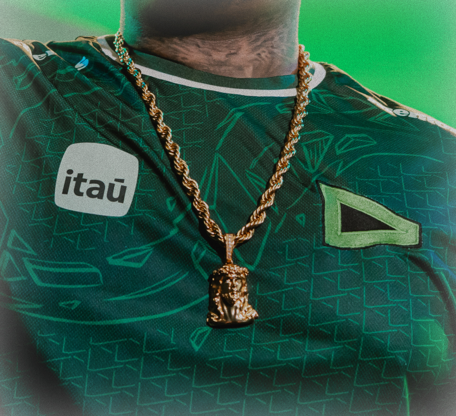

Direção de arte e comunicação de marca
Direção de arte contÃnua para sustentar uma identidade coerente através de campanhas, com uma linguagem visual que se adapta sem se diluir.

contexto
Cada campanha vinha sendo tratada como um projeto isolado, sem um fio condutor visual que reforçasse a marca ao longo do tempo.
processo
Definição de uma direção de arte modular, com princÃpios fixos e variações controladas por peça, canal e formato.
resultado
Presença de marca reconhecÃvel em qualquer ponto de contato, sem perder a flexibilidade necessária para cada campanha.